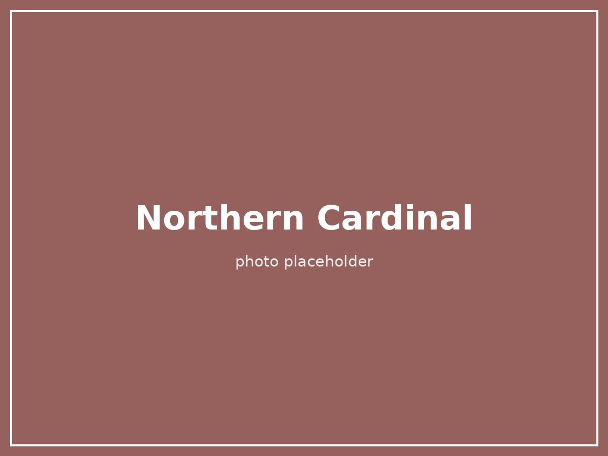
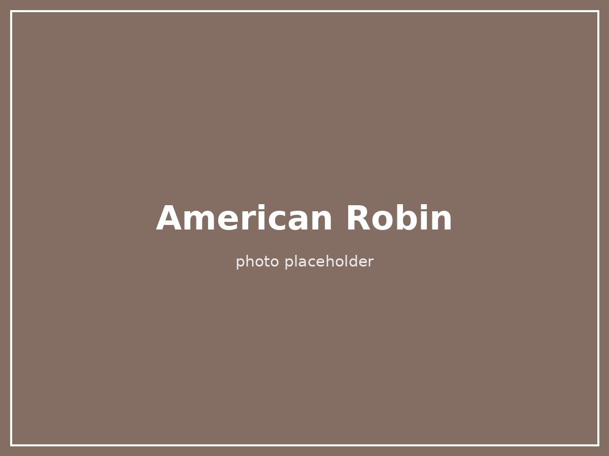
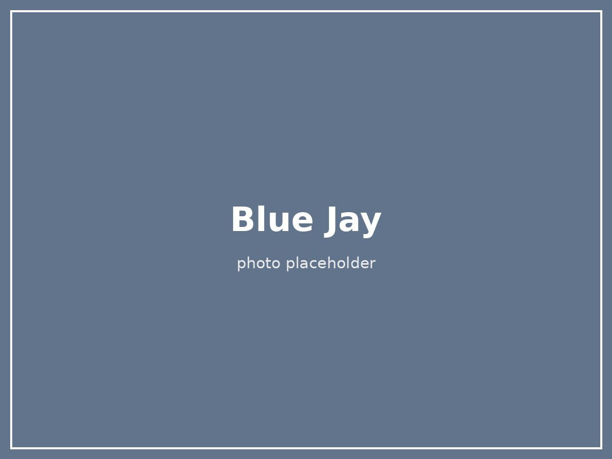
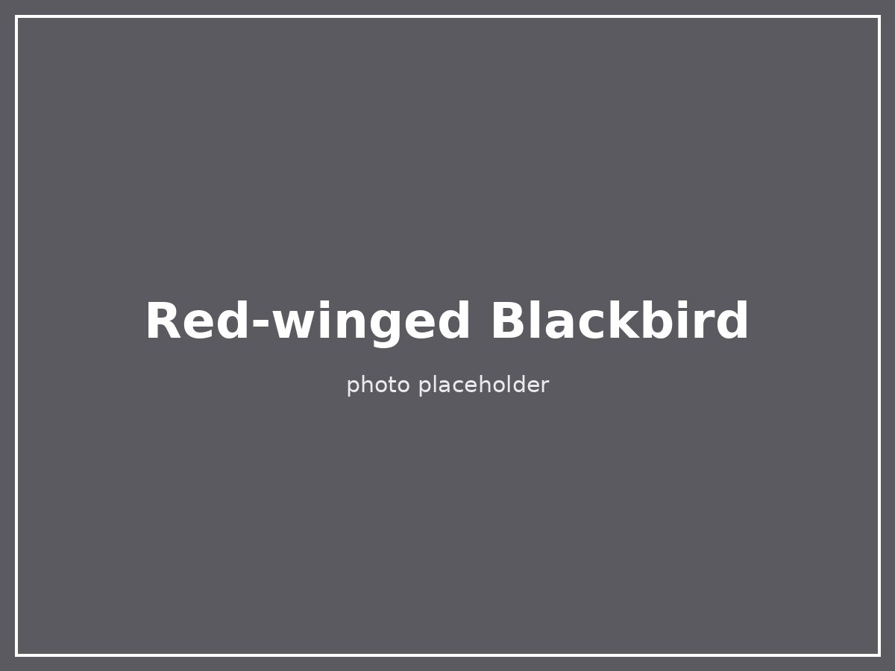

Each photo loads in the newest format your browser supports (AVIF, then WebP, then JPEG) and at a size that fits your screen.

Northern Cardinal. Ohio's state bird. Males are bright red; females are warm tan with red in the wings and tail. Photo: placeholder, license to comeCarolina Wren. A small, round brown bird with a bold white eyebrow and a surprisingly loud voice. Photo: placeholder, license to come

American Robin. The orange-breasted bird hopping across lawns, often the first song you hear at dawn. Photo: placeholder, license to come

Blue Jay. Loud and bold, with blue, white and black feathers. Blue Jays can even imitate hawks. Photo: placeholder, license to come

Red-winged Blackbird. Males are glossy black with red and yellow shoulder patches. Look for them near ponds and wetlands. Photo: placeholder, license to come